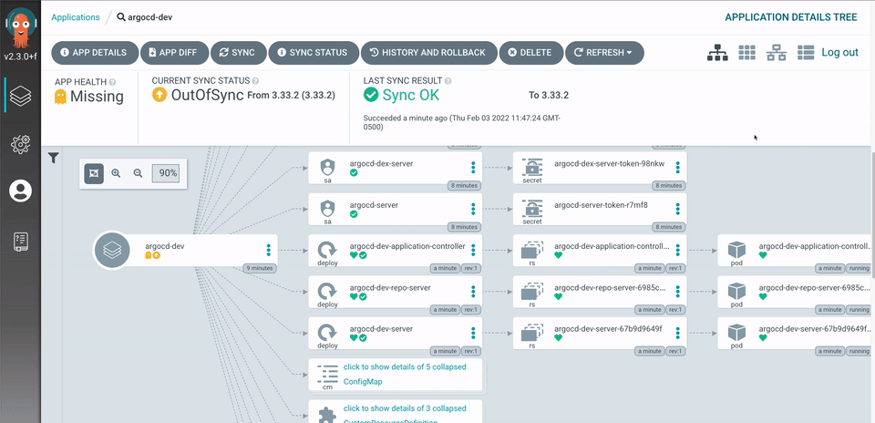

Multiple Kubernetes clusters help you dedicate applications by service category. But managing multiple Kubernetes clusters can sometimes get difficult.

This article will show you how to use Argo CD and GitOps to manage multiple Kubernetes clusters.
Why Managing Multiple Clusters Is Hard
Managing multiple Kubernetes clusters is hard because it multiplies operational overhead, causes configuration drift, and complicates governance.
Operational Overhead and Manual Work
- Repetitive deployment — the same manifests are applied cluster by cluster with
kubectl apply, wasting time and inviting typos - No single source of truth — the cluster's live state is the only record of what's running, with no version history behind it
- Wrong-cluster mistakes — pointing a command at the wrong context can silently update the wrong environment
Configuration Drift and Governance
- State divergence — manual changes or staggered rollouts mean clusters slowly fall out of sync, causing unpredictable bugs
- No audit trail — someone edited a Deployment by hand and no one can tell what changed, when, or why
- Inconsistent policies — replicating RBAC, secrets, and configs across clusters creates blind spots
Version Consistency
- Mixed versions — one cluster runs v1.2 while another still runs v1.0, and the gap is only discovered in production
- Slow, error-prone rollouts — promoting a new version across all clusters is a manual checklist instead of a repeatable process
What Is Argo CD
Argo CD is a declarative GitOps tool for Kubernetes that continuously watches your Git repository and automatically syncs your clusters to match the desired state defined there.
In a GitOps workflow, your Git repository is the single source of truth — the place where your entire cluster state lives, versioned and reviewed like code.
Setup: Cluster A and Cluster B
To see this in action, let's use two clusters:
- Cluster A — the management cluster. Argo CD is installed here, and it also runs applications
- Cluster B — an application-only cluster. No Argo CD here; it just runs the apps you deploy to it
Argo CD installed in Cluster A watches your Git repository and syncs apps to both clusters — Cluster B needs nothing installed, only its credentials registered with Argo CD.
flowchart LR
subgraph Git["Git Repository"]
Repo["my-infra.git"]
end
subgraph ClusterA["Cluster A — Management + Apps"]
ArgoCD["Argo CD"]
AppA["Applications"]
ArgoCD --> AppA
end
subgraph ClusterB["Cluster B — Apps Only"]
AppB["Applications"]
end
Repo -->|"watches & syncs"| ArgoCD
ArgoCD -->|"sync"| AppB
How to Deploy Argo CD
Step 1 — Install the Chart
The fastest way to get Argo CD running is the official Helm chart from the argo-helm repository:
helm repo add argo https://argoproj.github.io/argo-helm
helm repo update
kubectl create namespace argocd
Step 2 — values.yaml
A production setup usually goes beyond the chart defaults. Here is an example values.yaml that customizes repo credentials, RBAC, scaling, and SSO:
configs:
cm:
create: true
kustomize.buildOptions: --enable-helm
credentialTemplates:
https-creds:
url: https://gitlab.example.com/my-org/my-infra.git
username: <your-gitlab-username>
password: <your-gitlab-token>
redis-ha:
enabled: true
server:
extraArgs:
- --insecure
- --enable-gzip
service:
type: ClusterIP
autoscaling:
enabled: true
minReplicas: 2
repoServer:
autoscaling:
enabled: true
minReplicas: 2
applicationSet:
replicas: 2
dex:
enabled: false
Here's what each section does:
configs.cm— settings for Argo CD's main ConfigMap.kustomize.buildOptions: --enable-helmlets Kustomize render Helm charts as part of a buildconfigs.credentialTemplates— a reusable set of Git credentials (https-creds) Argo CD uses to clone private repositories like your GitLab repo. The placeholders should be replaced with a real username and access tokenredis-ha— deploys Redis in high-availability mode, which Argo CD uses for caching. Set totruefor resilience across failuresserver.extraArgs— flags passed to the Argo CD API server.--insecuredisables the internal TLS layer,--enable-gzipcompresses API responsesserver.service.type: ClusterIP— keeps the server internal and reachable only inside the cluster; you access it later via port-forwardingserver.autoscaling/repoServer.autoscaling— auto-scales the API server and repo server to at least 2 replicas each to handle more apps and clustersapplicationSet.replicas— the ApplicationSet controller runs 2 replicas (it generates Applications for multiple clusters from templates)dex.enabled: false— disables Dex SSO since we only use the localadminaccount; re-enable it if you want login via an external identity provider
helm install argocd argo/argo-cd -n argocd -f values.yaml
The install targets the current kubeconfig context, so this command deploys Argo CD into Cluster A — your management cluster. Nothing is installed on Cluster B.
Step 3 — Get the Admin Password
The chart stores the admin password in a secret. Decode it with:
kubectl -n argocd get secret argocd-initial-admin-secret \
-o jsonpath="{.data.password}" | base64 -d
Step 4 — Access the UI
kubectl port-forward svc/argocd-server -n argocd 8080:80
Open http://localhost:8080, sign in as admin, and you'll see an empty Applications view — ready for you to register your clusters and apps.
Step 5 — Install CRDs on Cluster B
Argo CD uses three custom resource types (CRDs): Application, ApplicationSet, and AppProject. Cluster A gets them automatically when you install the chart, but Cluster B does not — if you plan to deploy Argo CD resources (an app-of-apps pattern) onto Cluster B, it needs the CRDs installed too.
Install them from the official manifests:
kubectl apply -k https://github.com/argoproj/argo-cd/manifests/crds
The crds directory ships a kustomization.yaml covering application-crd.yaml, applicationset-crd.yaml, and appproject-crd.yaml.
Step 6 — Register Cluster B with a Service Account
Argo CD needs cluster-admin access on Cluster B to manage its resources. The recommended way to grant it is a dedicated argocd-manager ServiceAccount — this keeps Cluster B independent from your local credentials.
First, create the argocd namespace on Cluster B:
kubectl create namespace argocd
Then create these resources on Cluster B:
---
apiVersion: v1
kind: ServiceAccount
metadata:
name: argocd-manager
namespace: argocd
---
apiVersion: v1
kind: Secret
metadata:
name: argocd-manager-token
namespace: argocd
annotations:
kubernetes.io/service-account.name: argocd-manager
type: kubernetes.io/service-account-token
---
apiVersion: rbac.authorization.k8s.io/v1
kind: ClusterRole
metadata:
name: argocd-manager-role
rules:
- apiGroups: ["*"]
resources: ["*"]
verbs: ["*"]
- nonResourceURLs: ["*"]
verbs: ["*"]
---
apiVersion: rbac.authorization.k8s.io/v1
kind: ClusterRoleBinding
metadata:
name: argocd-manager-binding
roleRef:
apiGroup: rbac.authorization.k8s.io
kind: ClusterRole
name: argocd-manager-role
subjects:
- kind: ServiceAccount
name: argocd-manager
namespace: argocd
Then add the cluster to Argo CD using the ServiceAccount token in the next step.
Step 7 — Register the Cluster Declaratively
Register Cluster B declaratively by creating a Secret on Cluster A (in the argocd namespace) with the label argocd.argoproj.io/secret-type: cluster. Argo CD watches for these Secrets and automatically adds the cluster.
---
apiVersion: v1
kind: Secret
metadata:
labels:
argocd.argoproj.io/secret-type: cluster
name: argocd-cluster-b
namespace: argocd
stringData:
config: |
{"bearerToken":"xxxx","tlsClientConfig":{"caData":"x","insecure":false}}
name: cluster-b
server: https://cluster-b-api.example.com:6443
type: Opaque
Apply it on Cluster A and Argo CD will pick up Cluster B automatically. Replace bearerToken with the ServiceAccount token, caData with Cluster B's certificate authority, and server with Cluster B's API server URL (for example https://cluster-b-api.example.com:6443).
Step 8 — Deploy Applications to Both Clusters
With both clusters registered, you define what to deploy. Start with an AppProject — a logical grouping that controls which repositories, destinations, and resources an app can use:
apiVersion: argoproj.io/v1alpha1
kind: AppProject
metadata:
name: my-project
namespace: argocd
spec:
clusterResourceWhitelist:
- group: '*'
kind: '*'
description: My Argo CD project
destinations:
- namespace: '*'
server: https://kubernetes.default.svc
- namespace: '*'
server: https://cluster-b-api.example.com:6443
orphanedResources:
warn: false
sourceRepos:
- '*'
Next, a single Application that points at a folder in your Git repo and a destination cluster. This one targets Cluster A:
apiVersion: argoproj.io/v1alpha1
kind: Application
metadata:
name: my-app
namespace: argocd
spec:
project: my-project
source:
directory:
recurse: true
repoURL: https://gitlab.example.com/my-org/my-infra.git
targetRevision: main
path: apps/my-app/overlay/my-env/applications
destination:
server: https://kubernetes.default.svc
namespace: argocd
When you have many apps and clusters, an ApplicationSet generates Applications from a template instead of writing them by hand. This one creates one app per app/cluster combination across both clusters:
apiVersion: argoproj.io/v1alpha1
kind: ApplicationSet
metadata:
name: my-appset
namespace: argocd
spec:
generators:
- matrix:
generators:
- list:
elements:
- app: api
path: api
- app: web
path: web
- app: worker
path: worker
- list:
elements:
- cluster: cluster-a
server: https://kubernetes.default.svc
- cluster: cluster-b
server: https://cluster-b-api.example.com:6443
template:
metadata:
name: "{{app}}-{{cluster}}"
labels:
domain: my-project
spec:
project: my-project
source:
repoURL: https://gitlab.example.com/my-org/my-infra.git
targetRevision: main
path: "apps/my-app/overlay/my-env/{{path}}"
destination:
server: "{{server}}"
namespace: default
syncPolicy:
preserveResourcesOnDeletion: true
The ApplicationSet matrix generator combines the app list with the cluster list, producing six applications (api-cluster-a, api-cluster-b, web-cluster-a, and so on). Change a manifest in Git and Argo CD rolls it out to every matching app and cluster automatically.